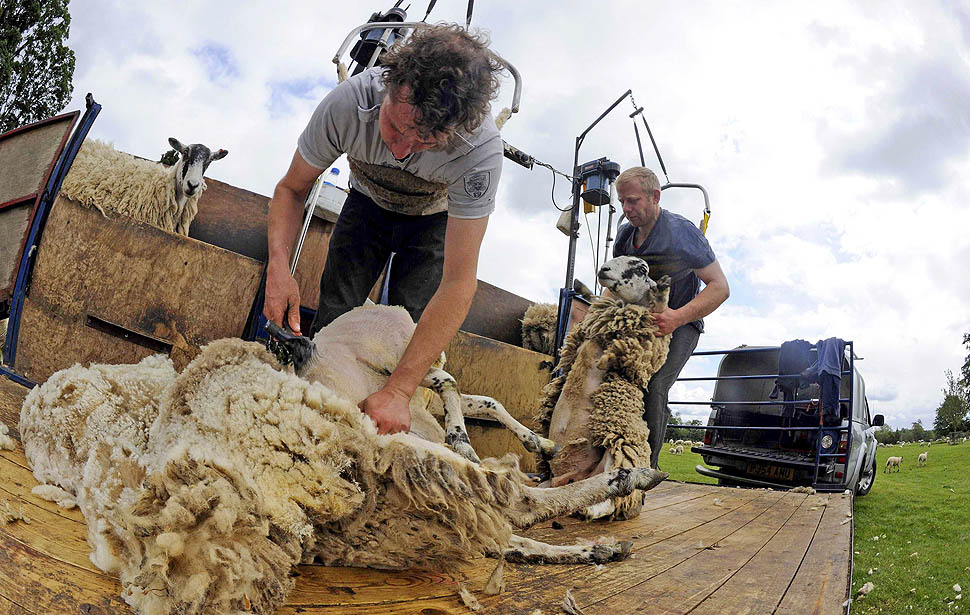

Эксперт Геворг Абажидзе. Фермер-овцевод фабрики «Вязань», стаж 37 лет
Преподаватель в Институте сельского хозяйства. Эксперт в области выращивания овец. Расскажет преимущества овечьей шерсти и почему стоит использовать натуральные ткани в текстиле.
Преподаватель в Институте сельского хозяйства. Эксперт в области выращивания овец. Расскажет преимущества овечьей шерсти и почему стоит использовать натуральные ткани в текстиле.
Современные исследования подтвердили, что польза натуральной овчины - реальный факт. Длинная шерсть имеет скрученную структуру, которая не пачкается, отводит от тела влагу, удерживает сухое тепло. Волокна шерсти покрыты ланолином - смазывающим веществом, которое улучшает состояние кожи и способствует заживлению.
Научный аграрный центр
www.agronomsoviet.comОвечья шерсть препятствует развитию микроорганизмов, оказывает противовоспалительное действие. При этом, она не провоцирует аллергию.
Овчина
37%
Влаги поглощает
Для выпаса используют летние пастбища Большого Кавказаи Южно-Грузинского нагорья. На предприятии используется натуральная шерсть состриженная с живых и здоровых овец. При стрижке в кожу животного не выделяются гормоны стресса и канцерогенные вещества.
Поэтому сохраняются главные свойства шерсти:
воздухонепроницаемости
нетоксичность
безопасность носки
долговечность
Неотъемлемой частью является профилактические осмотры у ветеринара. Наши специалисты стригут овец в специально отведенном помещении. Обязательно светлом и сухом. Предварительно подготавливают деревянные щиты, столы или расстилают брезент, чтобы предотвратить потери шерсти.
Шерсть от животных получают как правило при помощи стрижки, реже — вычесыванием
Овечья шерсть — материал полученный из волосяного покрова домашних овец, используется для производства одежды, постельных принадлежностей, домашнего текстиля и аксессуаров
Свитер «Поль» 3200 ₽
Изделия из натуральной шерсти очень долговечны, в отличии от не натуральных материалов. При правильном уходе свитер из 100% шерсти исландской овцы прослужит вам долгие годы.
Пальто «Ария» 8700 ₽
Шерсть - это дышащий материал, внутри такого пальто будет сохраняться оптимальная для тела температура, без перегрева в теплую погоду.
Комплект одеяло, подушки 10500 ₽
Эффективно сохраняет тепло и держит баланс температуры, за счет воздуха между волокнами шерсти. Под одеялом из овечьейшерсти не жарко и не холодно.